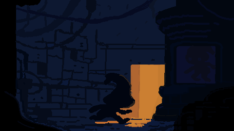
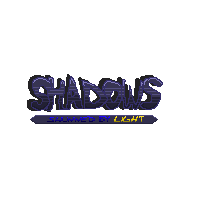

Un puzzle top-down donde la luz puede matarte… o ayudarte. Jugás como Shawy, una pequeña criatura de sombra que intenta escapar de una instalación humana usando lógica y planificación. Y cada muerte, en vez de castigarte, te da una herramienta nueva.
A top-down puzzle game where light can kill you… or help you. You play as Shawy, a small shadow creature trying to escape a human facility through logic and planning. And every death, instead of punishing you, gives you a new tool.
Shadows arrancó de una pregunta simple: ¿y si el enemigo más obvio de una criatura de sombra —la luz— fuera también su recurso más útil?
Shadows started from a simple question: what if a shadow creature's most obvious enemy —light— were also its most useful resource?
El jugador controla a Shawy, que se escapó de su celda en un complejo humano de investigación y quiere volver al Abismo, su lugar de origen. En cada nivel hay que bloquear, reflejar y redirigir la luz para abrir caminos y activar mecanismos. La misma luz que resuelve el puzzle es la que te mata si la tocás sin cuidado. Esa tensión —recurso y amenaza en el mismo objeto— es el corazón de cada nivel.
The player controls Shawy, who has escaped its cell in a human research complex and wants to return to the Abyss, where it came from. Each level asks you to block, reflect and redirect light to open paths and trigger mechanisms. The same light that solves the puzzle kills you if you touch it carelessly. That tension —resource and threat in the same object— is the heart of every level.
Cada haz sirve para avanzar y para matarte. El jugador nunca la elimina: aprende a convivir con ella y a usarla a su favor.
Every beam can help you move forward or kill you. The player never gets rid of it: they learn to live with it and use it in their favor.
La muerte no reinicia sin más: corrompe el piso y desbloquea casillas nuevas donde colocar ShadowBlocks. El fracaso construye la solución.
Death doesn't just restart the level: it corrupts the floor and unlocks new tiles where you can place ShadowBlocks. Failure builds the solution.
Es un puzzle de planificación. Ganás pensando la secuencia, no apretando rápido. Cada nivel es un pequeño teorema.
It's a planning puzzle. You win by thinking through the sequence, not by pressing fast. Every level is a small theorem.
"Tu muerte también es una herramienta: cada vez que morís, el piso se corrompe y desbloquea casillas nuevas donde podés colocar ShadowBlocks."
"Your death is also a tool: every time you die, the floor gets corrupted and unlocks new tiles where you can place ShadowBlocks."
En un puzzle, morir suele significar "volvé a empezar". Eso castiga al jugador y corta el ritmo. Buscábamos que el error fuera información y progreso, no un muro.
In a puzzle game, dying usually means "start over". That punishes the player and breaks the rhythm. We wanted mistakes to be information and progress, not a wall.
Cada muerte deja el terreno corrompido y habilita casillas donde el jugador coloca ShadowBlocks para bloquear o redirigir la luz. Así, un nivel imposible al primer intento se vuelve resoluble a medida que el jugador "invierte" muertes estratégicas. El fracaso se transforma en la mecánica de avance.
Every death leaves the ground corrupted and opens up tiles where the player places ShadowBlocks to block or redirect light. So a level that's impossible on the first try becomes solvable as the player "invests" strategic deaths. Failure becomes the way forward.
Casi nada salió bien al primer intento. Estas son las cuatro veces que tuvimos que volver atrás y rehacer algo que ya funcionaba, porque funcionar no alcanzaba: el jugador no lo entendía, o no lo disfrutaba.
Almost nothing worked on the first try. These are the four times we had to go back and redo something that already worked, because working wasn't enough: the player didn't understand it, or didn't enjoy it.
Arrancamos con las luces que Unity trae hechas. Servían para iluminar, pero en Shadows la luz es lo que jugás: tenés que poder mirar un haz y saber en el acto hasta dónde llega, dónde termina la sombra y qué pasa si ponés un bloque en el medio. Con esas luces el jugador nunca terminaba de leer el espacio.
We started with Unity's built-in lights. They were fine for lighting things up, but in Shadows light is what you play with: you need to look at a beam and instantly know how far it reaches, where the shadow ends and what happens if you put a block in the way. With those lights, players never quite managed to read the space.
Terminé rehaciendo el sistema de luz entero para que se comportara como un objeto físico: choca contra las paredes, la sombra que proyecta un bloque es real y la podés usar como refugio. Recién ahí el nivel se volvió algo que se puede planificar mirando.
I ended up rebuilding the whole light system so it behaved like a physical object: it hits walls, the shadow a block casts is real, and you can use it as shelter. Only then did a level become something you can plan just by looking at it.
Ese cambio me habilitó una segunda luz: la roja, que no perdona —te destruye el bloque al instante—. Es la que convierte algunos niveles en una carrera y no en un problema tranquilo.
That change opened the door to a second light: the red one, which doesn't forgive —it destroys your block instantly. It's what turns some levels into a race instead of a calm problem.
A mitad del proyecto cambiamos todo el estilo visual a pixel art. El grueso del arte lo llevaron Jesús y Agustín; a mí me tocaron algunos tiles y los iconos de la interfaz, y me costaron bastante más de lo que imaginaba. Tenían que resolver dos cosas a la vez: que entiendas de un vistazo qué hace cada objeto, y que el lugar siga sintiéndose oscuro y opresivo. Los primeros intentos fueron un desastre y hubo que rehacerlos varias veces.
Halfway through the project we switched the whole visual style to pixel art. Jesús and Agustín handled most of the art; I did some tiles and the interface icons, and they were a lot harder than I expected. They had to do two things at once: let you understand at a glance what each object does, and keep the place feeling dark and oppressive. The first attempts were a mess and had to be redone several times.
La prueba de que estaba bien era simple: si alguien que nunca jugó mira la pantalla y sabe qué lo va a matar, funciona.
The test was simple: if someone who's never played looks at the screen and knows what's going to kill them, it works.
Al principio el jugador tenía una sola cosa para hacer: poner un bloque que tapa la luz. Alcanzaba para unos cuantos niveles, pero se agotaba rápido.
At first the player had only one thing to do: place a block that covers the light. It was enough for a handful of levels, but it wore out fast.
Fui sumando herramientas que cambian la pregunta que te hace el nivel. El bloque reflectante te deja mandar la luz a otro lado en vez de apagarla, así que de golpe la luz también es tuya. La Llama del Abismo es una llama que manejás por separado, atraviesa lo que tu personaje no puede y corrompe el suelo donde se apaga: te deja preparar el terreno a distancia. Y el teletransporte corto rompe la idea de que sólo se avanza caminando.
I kept adding tools that change the question each level asks you. The reflective block lets you send light somewhere else instead of blocking it, so suddenly the light is yours too. The Abyss Flame is a flame you control separately; it passes through what your character can't and corrupts the floor where it goes out, letting you prepare the ground from a distance. And the short teleport breaks the idea that walking is the only way forward.
Cada una entra con su propio nivel-tutorial y después se combinan. Ese es el arco real del juego: no que los puzzles se hagan más grandes, sino que tengas más formas de mirarlos.
Each one is introduced with its own tutorial level and then they start combining. That's the real arc of the game: not that puzzles get bigger, but that you have more ways of looking at them.
Shadows tiene reglas que nadie espera: que convenga morir, que la luz se pueda reflejar, que el piso donde moriste sea justamente donde después vas a construir. Puesto en un cartel, suena a instructivo y corta el clima.
Shadows has rules nobody expects: that dying can be worth it, that light can be reflected, that the floor where you died is exactly where you'll build later. Put on a sign, it reads like a manual and breaks the mood.
Terminé poniendo NPCs que resuelven el nivel adelante tuyo y recién después te dan la habilidad. Aprendés mirando a otro hacerlo, que es como se aprende todo. Sumé también una previsualización al colocar bloques, porque en el playtesting se veía a la gente gastando bloques por no saber dónde iban a caer.
I ended up adding NPCs that solve the level in front of you and only then give you the ability. You learn by watching someone else do it, which is how we learn everything. I also added a preview when placing blocks, because in playtesting we saw people wasting blocks without knowing where they'd land.
El playtesting que hicimos entre los tres fue el que marcó casi todos estos cambios: ahí se nota rápido qué se entiende solo y qué no.
The playtesting the three of us did drove almost all of these changes: that's where you quickly see what makes sense on its own and what doesn't.
"Subestimé la carga horaria y dejé la producción de assets para la última etapa. La build de la beta salió menos pulida de lo que queríamos."
"I underestimated the workload and left asset production for the last stage. The beta build came out less polished than we wanted."


Desarrollado en Unity con C# por un equipo de tres (HYN Interactive) para la materia de Diseño de Videojuegos, UADE. Arte en pixel art. Sin uso de IA generativa.
Developed in Unity with C# by a team of three (HYN Interactive) for the Game Design course at UADE. Pixel art visuals. No generative AI was used.
Nos repartimos el trabajo entre los tres: a mí me tocó sobre todo programar —el personaje, las luces, las habilidades y la interfaz—, mientras Jesús y Agustín se ocuparon del pixel art, las animaciones y buena parte de los niveles. Las mecánicas y el diseño de los niveles los fuimos discutiendo entre todos.
We split the work among the three of us: I mostly handled programming —the character, the lights, the abilities and the interface— while Jesús and Agustín took care of the pixel art, the animations and a good part of the levels. We worked out the mechanics and level design together.